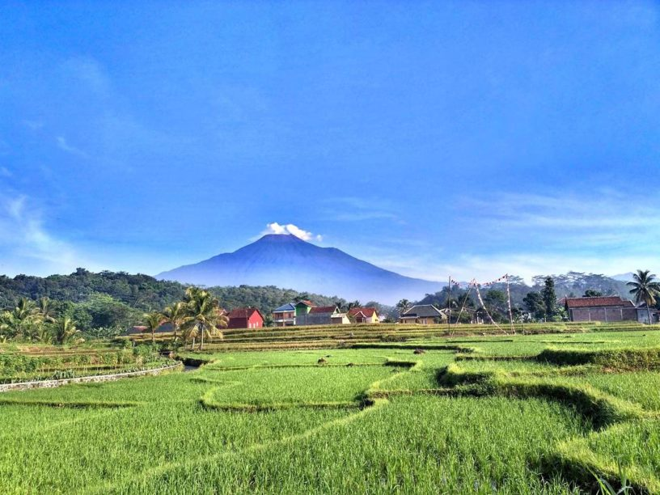

Menghitung Luas Persegi
Deskripsi Algoritma
- Mulai
- Masukkan panjang sisi persegi (s)
- Hitung luas persegi dengan rumus: Luas = s x s
- Tampilkan hasil luas persegi.
- Selesai
Terletak pada 101° 11" BT - 109°35" BT dan 7°10" LS - 7°29 LS" terbentang pada altitude ± 40 – 1.500 meter diatas permukaan laut dengan dua musim yaitu musim Hujan antara April – September dan musim Kemarau antara Oktober – Maret. Secara umum Purbalingga termasuk dalam iklim tropis dengan rata-rata curah hujan 3,739 mm – 4,789 mm per tahun. Jumlah curah hujan tertinggi berada di Kecamatan Karangmoncol, sedangkan curah hujan terendah di Kecamatan Kejobong. Suhu udara di wilayah Kabupaten Purbalingga antara 23.20 °C – 32.88 °C dengan rata-rata 24.49 °C.
Purbalingga berada di cekungan yang diapit beberapa rangkaian pegunungan. Di sebelah utara merupakan rangkaian pegunungan (Gunung Slamet dan Dataran Tinggi Dieng). Bagian selatan merupakan Depresi Serayu, yang dialiri dua sungai besar Kali Serayu dan anak sungainya, Kali Pekacangan. Anak sungai lainnya yaitu seperti Kali Klawing, Kali Gintung, dan anak sungai lainnya. Ibu kota Kabupaten berada di Purbalingga, sekitar 21 km sebelah timur laut Purwokerto.